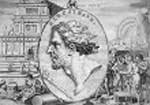

Efes’in gururu olan devasa Artemis Tapınağı Akdeniz’e bakardı. İnşa edilmesi 120 yıl sürmüştü. Antik dünyanın yedi harikası arasında sayılıyordu. Ta ki MÖ 356 yılında genç bir Yunanlı olan Herosratus onu yakana kadar...
Yaşanan felaket Efes’te büyük şok yaşanmasına neden oldu. Yakalandıktan sonra Herostratus tapınağı adının sonsuza kadar anılmasını sağlamak için yaktığını söyleyince bu daha büyük bir şaşkınlık yarattı. Sadece ün sahibi olmak için suç işleyenler anlamına gelen “herostratik suçlular” deyimi buradan gelmektedir.

Herostratus hedefini çok dikkatli seçmişti. Tapınak, doğum ve av tanrıçası olan Artemis’e adanmıştı. Atina’daki Parthenon’dan daha büyüktü. Yapımı, efsanevi derecede zengin olan Kral Croesus tarafından finanse edilmişti. “Tanrıların tek gerçek evi Efes’teki Artemis Tapınağı’dır,” diye yazar tapınağın bir hayranı olan Bizanslı Philo. “Bu söylediğimi sınamak isteyenler onu kendi gözleriyle gördüklerinde anlayacaklardır ki tanrılar gökteki ölümsüz meskenlerini bırakıp kendilerine dünyada bir yer edinmiştir.”
Herostratus’un yangından önceki hayatı hakkında pek az şey bilinmektedir. Tutuklandıktan sonra vücudu gerilerek işkence yapılmıştır. Bu genelde vatandaş olmayanlara uygulanan bir cezaydı. Bu nedenle Herostratus’un Efes’in yerlisi olmama ya da bir köle olma ihtimali oldukça yüksektir.
İdam edildikten sonra yetkililer ona bir ceza daha verdiler. İstediği üne kavuşmasını engellemek için isminin anılmasına yasak getirildi. Yasağa yüzyıllar boyunca uyulmuş olsa da en sonunda bir antik çağ yazarı yasağı delerek Herostratus’un adının hatırlanmasını ve arzu ettiği ölümsüz üne kavuşmasını sağladı.
Ek Bilgiler
1- Yunanca adı Ephesus olan Efes günümüz Türkiye’sindedir. Şehirdeki Artemis Tapınağı’ndan arta kalanları da içeren antik Yunan kalıntıları 19. yy’da başlayan kazılarda ortaya çıkarılmıştır.
2- Tapınağa saldırı Alman şair Georg Heym’in (1887-1912) “The Lunacy of Herostratus” (Herostratus’un Deliliği) şiirine ve Jean Paul Sartre’ın (1905-1980) L’Erostrate adlı kısa öyküsüne konu olmuştur.
3- Stratos Yunanca’da ordu anlamına gelmektedir. Herostratos ise ordu kahramanı anlamına gelir.